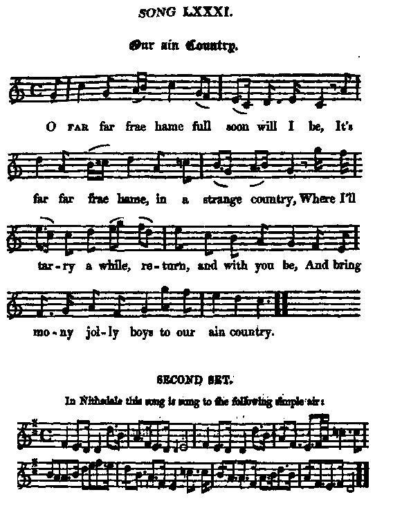
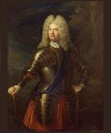
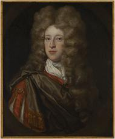

Our ain Country
Notre propre pays
Author unknown
Tune - Mélodie N°1 (midi)"Our ain Country - First set"
Tune - Mélodie N°2 (midi)
"Our ain Country - Second set"
from Hogg's "Jacobite Relics" , volume I, N° 81, 1819
Tunes sequenced by Christian Souchon

|
To the tunes
:
First set : "This is a genuine old song, and has long been popular; so also is the air: but I am told that there is another, [different from the Nithsdale air?], very beautiful original air, which I have been unable to procure. I got very many different copies of the song; but this one is taken, I believe, solely from Mr Scott's MS collection. Second set : In Nithsdale this song is sung to the following simple air". Hogg in "Jacobite Relics", vol. I, 1819 [Maybe a variant to « Mary Scott, the Flower of Yarrow », to which song Z09 «Hame, hame» is sung in two equally beautiful versions]. |
A propos des mélodies
Première mélodie : "Voilà une véritable chanson ancienne, bien connue depuis longtemps. Il en est de même de la mélodie. Mais j'ai appris qu'il existe un deuxième air, [autre que l'air du Nithsdale?] très joli que je n'ai pu me procurer. J'ai reçu plusieurs versions de ce chant. Celle que je présente, n'existe, je crois, que dans la collection de manuscrits de M. (James?) Scott. Seconde mélodie : En Nithsdale on chante cette chanson sur l'air simple qui suit." Hogg dans "Jacobite Reliques", volume I, 1819 [Il s’agit peut-être d’une variante de « Mary Scott, the Flower of Yarrow », le timbre du chant Z09 «Hame, hame» qui existe sous deux versions aussi belles l’une que l’autre]. |

|
OUR AIN COUNTRY
1. O far far frae hame full soon will I be, It's far far frae hame, in a strange country, Where I'll tarry a while, return, and with you be, And bring mony jolly boys to our ain country. 2. I wish you all good success till I again you see: May the lusty Highland lads fight on and never flee. When the king sets foot on ground, and returns from the sea, Then you'll welcome him hame to his ain country. 3. God bless our royal king, from danger keep him free, When he conquers all the foes that oppose his majesty. God bless the duke of Mar and all his cavalry, [1] Who first began the war for the king and our country. 4. Convert revolting Dutch, or drown them in the sea Cadagon and all such, or hang him on a tree. [2] Pox on your volunteers to all eternity, Who rose against our king in his ain country. 5. Let the waters stop and stand like walls on every side, That our jolly boys may pass, with Heaven for their guide: The rebels following after, like Egyptians let them be, And all be drown'd together in their ain country. [3] 6. Let the clans still forward press, and fight most valiantly, To hash down the surge that invades our liberty. Dry up the river Forth, as thou didst the Red Sea, That our Israelites may pass through their ain country. 7. Let the traitor king make haste, and out of England flee, With all his spurious race come for beyond the sea; Then we will crown our royal king with mirth and jollity, And end our days in peace in our ain country. Source: "The Jacobite Relics of Scotland, being the Songs, Airs and Legends of the Adherents to the House of Stuart" collected by James Hogg, volume I published in Edinburgh by William Blackwood in 1819. |
NOTRE PROPRE PAYS
1. Dans peu de temps, hélas, je m'en vais voyager Loin, bien loin de chez moi, en pays étranger Pour y séjourner un temps, avant de rentrer ici Ramenant tous mes compagnons vers leur propre pays. 2. Meilleurs vœux à tous! Ce n'est qu'un au-revoir: Combattez sans jamais fuir, gais Montagnards, Quand à nos rives abordera notre roi de jadis, Vous l'accueillerez, j'en suis sûr, dans son propre pays. 3. Dieu préserve notre roi de tout danger, Que tous s'inclinent devant sa majesté, Dieu bénisse le Duc de Mar et sa cavalerie, [1] Il leva l'étendard du roi, dans son propre pays. 4. Convertissez le Germain ou noyez-le! Pendez Cadogan à quelque chêne noueux! [2] A bas vos volontaires, qu'ils soient à jamais maudits, Pour avoir marché contre leur roi, leur propre pays! 5. Que les eaux s'entrouvrent, et fassent deux murs; Le Ciel veuille nous ouvrir un passage sûr: Quant à nos poursuivants, comme les Egyptiens jadis, Qu'ils soient submergés par les eaux de leur propre pays.[3] 6. Que les clans vaillamment aillent de l'avant Pour écraser les mercenaires du tyran Comme jadis la Mer Rouge, que le Forth s'ouvre aussi Aux Israélites d'ici, dans leur propre pays. 7. Que le roi félon, bien vite, quitte Albion! Qu'il repasse la mer avec ses rejetons! Nous couronnerons notre roi; chacun sera ravi De décéder un jour en paix dans son propre pays. (Trad. Christian Souchon(c)2010) |
|
 [1] Mar : John Erskine, 6th Earl of Mar (1675 - 1732)[2] Cadagon : William Cadogan, 1st Earl Cadogan (born 1675 – died 17 July 1726) was a noted military officer in the army of John Churchill, 1st Duke of Marlborough during the War of the Spanish Succession. He commanded the prestigious 1st Foot Guards for some time. In 1715 he replaced the Duke of Argyll in command of the army who fought the Jacobite rising. [3] Red Sea : allegory often used in Jacobite songs (cf. for instance Hame, hame ). |
 [1] Mar : John Erskine, 6ème Comte de Mar (1675 - 1732)[2] Cadagon : William Cadogan, 1er Comte Cadogan (né 1675 – mort 17 juillet 1726) était un officier fameux de l'armée de John Churchill, 1er Duc de Marlborough pendant la guerre de Succession d'Espagne. Il commanda pendant un moment la prestigieuse 1ère Foot Guards (Garde d'infanterie). En 1715 il remplaça le Duc d'Argyll à la tête de l'armée qui combattit le soulèvement Jacobite. [3] Mer rouge : allégorie biblique qui revient plusieurs fois dans les chants Jacobites (cf. par ex. Hame, hame ). |